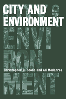

<body bgcolor="#FFFFFF" text="#000000" link="#0000FF" vlink="#CC0000" alink="#CC0000"><center><hr width="350" size="1" align="center" noshade>An introduction to urban environmental issues around the globe<hr width="350" size="1" align="center" noshade><p><a href="https://cdcshoppingcart.uchicago.edu/Cart/ChicagoBook.aspx?ISBN=9781592132836&&PRESS=temple" target="_top">Buy this book!</a> | <a href="https://cdcshoppingcart.uchicago.edu/Cart/Cart.aspx?PRESS=temple" target="_top">View Cart</a> | <a href="https://cdcshoppingcart.uchicago.edu/Cart/Cart.aspx?PRESS=temple" target="_top">Check Out</a></p><p></p></center><!--none//--><h1>City and Environment</h1>
<h3>Christopher G. Boone and Ali Modarres</h3>
<P>cloth 1-59213-283-9 $85.50, Jun 06, <FONT COLOR=#990033>Available</FONT>
<br>paper 1-59213-284-7 $31.95, Jun 06, <FONT COLOR=#990033>Available</FONT>
<br>Electronic Book 1-43990-424-3 $31.95 <FONT COLOR=#990033>Available</FONT>
<BR> 240 pp
6x9
10&nbsp;tables 7&nbsp;figures 5&nbsp;halftones
</P><BLOCKQUOTE><I>"From ancient Mesopotamia to post-modern Los Angeles, Boone and Modarres provide a broad sweep of the relationship between urbanization and the environment. Their goal is ambitious&#151;to see how cities and nature can co-exist in more sustainable ways&#151;and their arguments are well-developed, well-supported and provocative all at the same time. Both important and accessible, </i>City and Environment<i> is highly recommended."</i>
<br>&#151;<b>Manuel Pastor</b>, Latin American and Latino Studies, University of California, Santa Cruz<i></I></BLOCKQUOTE>
<p>For the first time in history, more than half the people of the world live in cities. Comprehending the impact of this widespread urbanization requires an awareness of the complex relationships between cities and natural ecosystems. This innovative book moves beyond the anti-urban lamentations that often dominate today's academic discourse to examine the evolution of cities and to illuminate the roles that humans play in shaping their environments, both natural and constructed.
<p>Christopher G. Boone and Ali Modarres argue that understanding the multiple forces of urbanization requires a holistic approach to the interactions of social, cultural, economic, political, and environmental factors. Without casting judgments, <i>City and Environment</i> seeks to engage readers in an exploration of cities from a truly global perspective. Throughout, it illuminates the social-ecological systems of cities not as an academic exercise&#151although informing academic audiences is one of its goals&#151but ultimately to help transform cities into livable and ecologically sustainable environments.
<BR>&nbsp;<h2>Excerpt</h2><P>Excerpt available at <a href="http://www.temple.edu/tempress">www.temple.edu/tempress</a></p>
<BR>&nbsp;<h2>Reviews</h2>
<p><i>"Boone and Modarres offer a bold, synoptic approach to thinking about urban nature and the nature of urbanism, teasing out the complex ways in which cities interact with the environment. Encompassing topics ranging from urban farming and ecological footprints, sprawl and smart growth, urban pollution and health effects, and the challenge of achieving environmental justice, this book is an accessible, engaging introduction to contemporary urban political ecology. </i>City and Environment<i> is a sign-post on the road to crafting a more sustainable vision for 21st century cities."</i>
<br>&#151;<b>Jennifer Wolch</b>, Professor of Geography & Planning, and Director, Center for Sustainable Cities, University of Southern California
<p><i>"Most work on the urban environment starts off with an explicit assumption that cities are artificial, unnatural or just plain bad. Boone and Modarres start from a much more sophisticated and complex interdisciplinary position and are able to show, elegantly and convincingly, that there is plenty to be learned about the convergence of cities and nature."</i>
<br>&#151;<b>Andrew Kirby</b>, Editor, <i>Cities: The International Journal of Urban Policy & Planning</i>
<p><i>"This book fills a void in the literature. It is unique in offering a comprehensive approach to the study of the urban environment. The authors have synthesized a variety of source literature, which has been scattered across multiple disciplinary sources, into one book."</i>
<br>&#151<b>Richard P. Greene</b>, Northern Illinois University
<p><i>"Planning hovers in the background...tak[ing] center stage [in] the final chapter, where the authors review urban growth boundaries, smart growth, and new urbanism. The comments are reasonable but brief."</i>
<br>&#151;<b><i>Planning</i></b>
<p><i>"Boone and Modarres’ analysis of the relationship of cities with their environments incorporates a variety of important topics relevant to several disciplinary fields. Beginning with descriptions of different city types across history, the authors draw on a wealth of data...and convincingly demonstrate the importance of exploring how cities can be made into livable, desirable places."</i>
<br>&#151;<b><i>Choice</i></b>
<p><i>"[A] timely discussion of the most likely dangerous consequences that mass urbanization with lave for the environment, before suggesting some of the possible solutions….This book has provided useful evidence in this direction[.]"</i>
<br>&#151;<b><i>Area</i></b>
<p><i>"Boone and Modarres do an excellent job synthesizing the relationship between cities and environment over time. The major strength of this book is that the authors combine historical understanding of the relationship between cities and the environment with discussion of possible future scenarios. This book is an excellent resource for both land use and urban geography courses….[T]he authors manage to use an interdisciplinary approach that leaves the reader with an excellent synopsis of how cities and the environment interact."</i>
<br>&#151;<b><i>The Pennsylvania Geographer</i></b>
<p><i>"The book is best seen as a compilation of essays around topics somehow related to city and environment.... rich in information on specific themes... the individual chapters may be interesting to students of a specific topic."</i>
<br>&#151;<b><i>The Journal of Housing and the Built Environment</i></b>
<p><i>""[C]risply written... it is a strength of the volume that it produces debate rather than closing it down by reaching constantly for the moral high ground. The authors are to be congratulated for producing an evenhanded treatment that will work well in advance undergraduate and introductory graduate courses."</i>
<br>&#151;<b><i>Environment and Planning B: Planning and Design</i></b>
<BR>&nbsp;<h2>Contents</h2><P>
<p>List of Tables and Figures
<br>Preface
<br>Acknowledgments
<br>1. Urban Morphology and the Shaping of an Urban Ideal
<br>2. Population, Urbanization, and Environment
<br>3. Feeding Cities That Consume Farmland
<br>4. Urban Infrastructure: Living with the Consequences of Past Decisions and Opportunities for the Future
<br>5. Healthy Cities and Environmental Justice
<br>6. Green Spaces, Green Governance, and Planning
<br>References
<br>Index
</P><BR>&nbsp;<H2>About the Author(s)</H2>
<table><tr><td valign="top"><img src="/tempress/authors/1654_au1.gif" height="90" width="75"></td><td width="100%" valign="middle"><p><b>Christopher G. Boone</b> is Associate Professor and holds joint appointments in the Global Institute of Sustainability as well as the School of Human Evolution and Social Change, Arizona State University.</P></td></tr></table><table><tr><td valign="top"><img src="/tempress/authors/1654_au2.gif" height="90" width="75"></td><td width="100%" valign="middle"><p><b>Ali Modarres</b> is the Associate Director of the Edmund G. "Pat" Brown Institute of Public Affairs and a Professor in the Department of Geography and Urban Analysis at California State University, Los Angeles.</P></td></tr></table>
<BR><H2>Subject Categories</H2>
<p><A HREF="/tempress/urban.html" TARGET="_top">Urban Studies</a>
<BR>
<BR><A HREF="/tempress/nature.html" TARGET="_top">Nature and the Environment</a>
</p>
<p align="center"><a href="https://cdcshoppingcart.uchicago.edu/Cart/ChicagoBook.aspx?ISBN=9781592132836&&PRESS=temple" target="_top">Buy this book!</a> | <a href="https://cdcshoppingcart.uchicago.edu/Cart/Cart.aspx?PRESS=temple" target="_top">View Cart</a> | <a href="https://cdcshoppingcart.uchicago.edu/Cart/Cart.aspx?PRESS=temple" target="_top">Check Out</a></p><p><font face="Arial" size="1"><a href="copyright.html" onMouseOver="window.status='Web Copyright Policy';return true;" onMouseOut="window.status=''" title="Web Copyright Policy">&copy;</a> 2015 <a href="http://www.temple.edu" target="new" onMouseOver="window.status='Link to Temple University home page';return true;" onMouseOut="window.status=''" title="Link to Temple University home page">Temple University</a>. All Rights Reserved. http://www.temple.edu/tempress/titles/1654_reg.html</font></p>